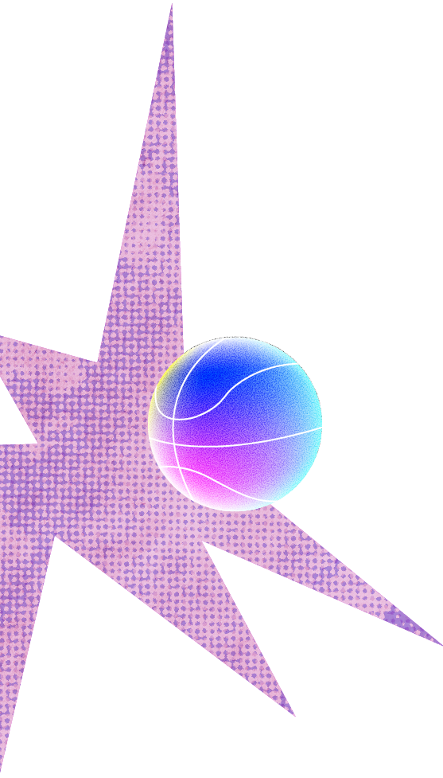
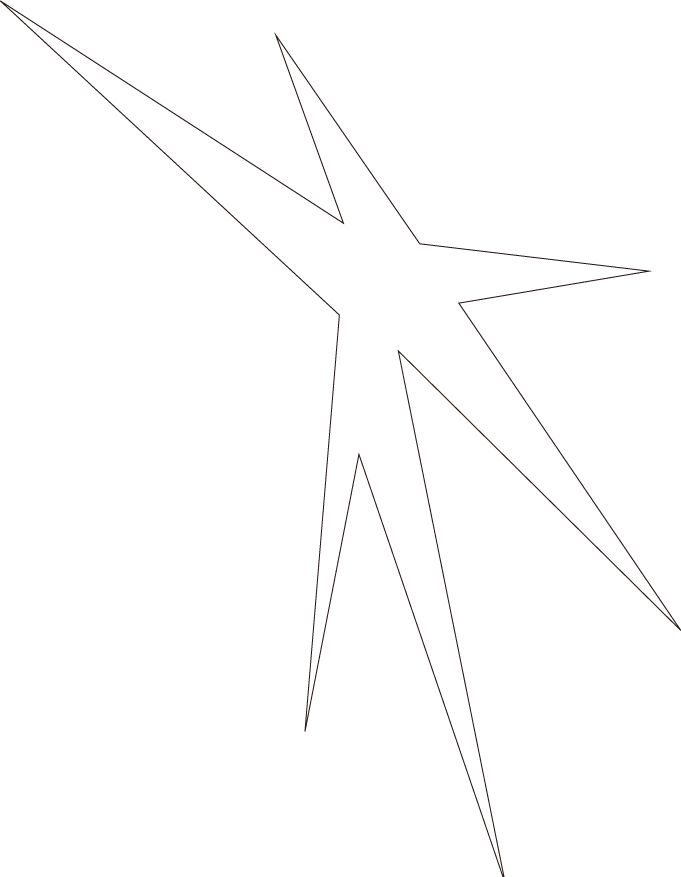
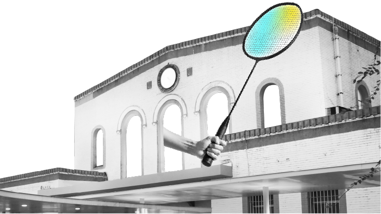
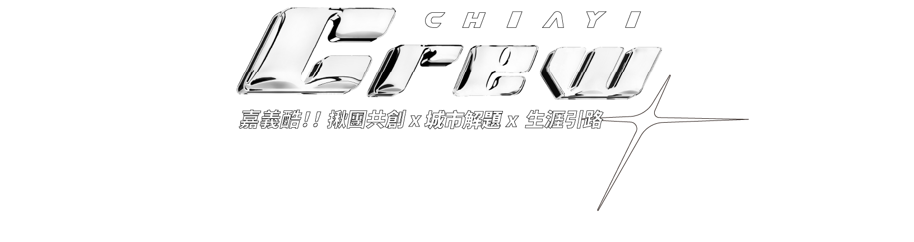
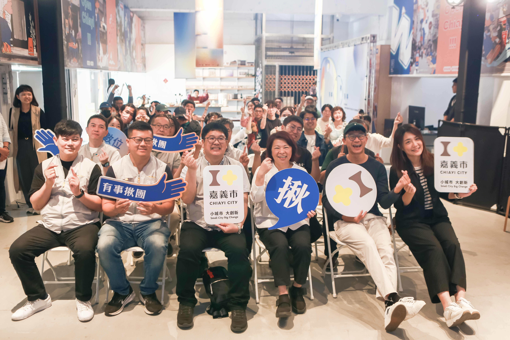
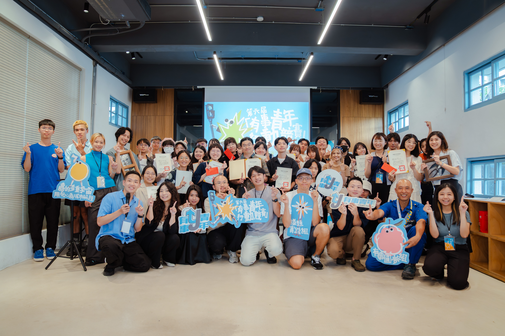
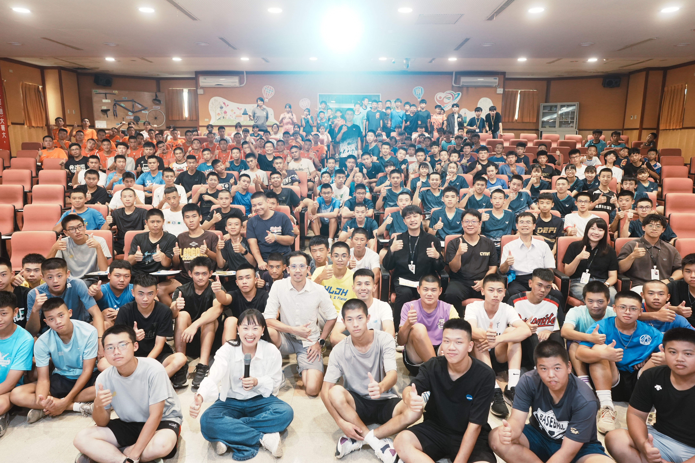

共 創 聯 合 成 果
Chiayi Crew，嘉義酷！一起共創，才是嘉義最酷的事。
「在這艘名為地球的太空船上，沒有乘客，只有一同航行的夥伴。」
“There are no passengers on spaceship Earth. We are all crew.”
在這座城市中，最有溫度也最珍貴的風景，是每當有人拋出一個引子，總能聽見這樣的回音——「那我們一起試試看！」
地方團隊與設計師一起，在共創的日常裡醞釀城市的新風景；青年與青年一起，在討論與實作間長出計畫、激發勇氣；運動員與教練一起，把場上的紀律延伸至場下的人生節奏。
當整座小城 crew 在一起，我們的連結就成為城市的能量。
無論你是初來乍到的新鮮人、初次來訪的遊客，是在地深耕的老靈魂、又或是愛上這片土地的同行者。現在，我們邀請你——走進嘉義，一起成為這座城市的 crew。
今年，我們以三個主題描繪城市的創意能量：
活動日期｜11/16–11/29
展覽地點｜西門交誼創新所（嘉義市東區光華路130號）
串聯活動｜詳見節目表
這裡有資源，有平台，有夥伴，也有行動。
這裡有讓人願意進入的空間、願意留下的動力，或是願意再試一次的理由。
我們相信，當我們組成一個 crew，嘉義的光芒將照亮更多地方。

「有事揪團」是一場結合共創與移居的城市實驗計畫，招募 10 位來自全台各地的創意夥伴，在嘉義市駐村一個月，與 5 組地方團隊共同生活與工作，一同探索城市發展的多元可能。從城市議題、地方文化到生活提案，激發多元共創成果，讓創意與地方力量在嘉義市真正交會，推動地方創生深入人群與日常生活。
地方團隊：紮背趴藝術文化工作室（DJ Taro）、寓居製作（寓製作）、華瑞開發股份有限公司（Achu 弎秋）、森韻木吉他工作室、漫境文化有限公司。
共創移居者：周汭、劉郁岑、鄭知耘、謝岫倫、王冠鈞、王品儒、李秉軍、李坤融、葉怡辰、詹婗。

用玩心為城市解題！15 組嘉市青年透過行動來實踐對地方的熱愛！
第六屆有事青年行動競賽由來自全台的青年，於今夏推出 15 場以嘉義市為場域的城市行動實驗。團隊們以「玩心」為核心，從食物、遊戲、聲音、影像到舞蹈，透過多元創意翻轉地方想像。透過實際參與一起了解青年如何「用玩心為城市解題」！
議題實踐組：窗的一日觀光刻、興義發快樂兒童餐、嘉聲in巷、作伙吃牢飯、醉後，有事發生、退休計畫：木送 、Base on Chiayi ― 嘉油好球。
有事圓夢組：打電話給…ㄇㄧˋ青蛙 、一日一舞一地 、再現嘉義座風華 、三行一夢｜風中 ê 畫布人 、巢想回嘉、走入水上：老街新聲，故事同行、有中藥香的暗房習作 、三二之後。

「如果不當選手，未來還能做什麼？」這是許多運動專長生心中的疑問。隨著體育產業快速發展，學生的未來發展已不限於競技場。
「+1運動員生涯引路人計畫」透過學界與業界的系統性接軌，為嘉義市的體育專長生開拓更多跨域探索的可能，協助青年運動員們打造屬於自己的人生賽道。
嘉義市政府今年帶領嘉義高中的籃球隊、棒球隊，以及嘉義高工的田徑隊、羽球隊學生們走進真實產業現場，學習職場關鍵力，跳脫單一競技框架。
活動賽事組：學習如何策劃賽事、運作球隊，成為幕後的運動推手。
生涯發展組：將體育變成文化，善用個人特質與專長，推動全民運動與教育扎根。
自媒體行銷組：透過影像與社群，讓運動故事傳遞得更遠、更動人。